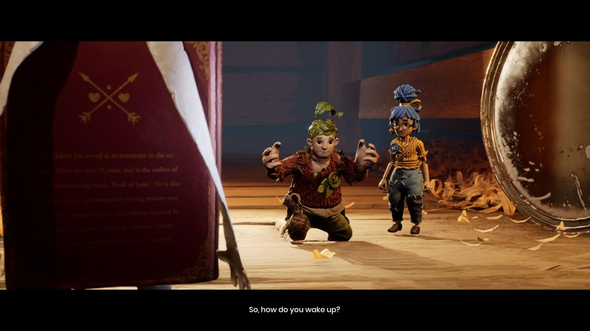

Publishing Info
- Published by: Electronic Arts, Inc.
- Developed by: Hazelight Studios AB
- Released: March 26, 2021
Description

It Takes Two is a 2 player co-op action game which follows Cody and May, who are magically turned into dolls
representing
themselves after their daughter Rose, who made the dolls, wishes that she could keep them from divorcing. To
return Cody
and May to their bodies, players have to platform across levels and complete puzzles. Character abilities
change each level,
which players must use to work together to solve the puzzles.
Game Categories
- Genre: Action
- Perspective: Behind view, Side view
- Gameplay: Minigames, Platform, Puzzle elements
- Setting: Contemporary, Fantasy
Quote
It Takes Two may be a puzzlebplatformer at heart, but its a true shapeshifter of a game, freely mixing in other genres
such as flight, fighting, racing, rhythm, and even action role-playing games.
-- https://www.mobygames.com/game/161320/it-takes-two/user-review/2553922/